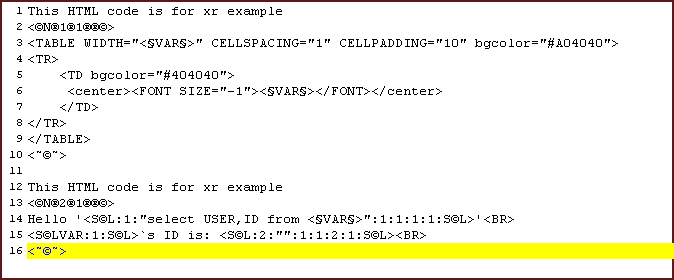

| WebTools
Templates: Page 1 1.
Templates: Description and reference
WebTools
has unique capability to manage templates with build-in functions (INLINE/INPERL),
also it has "xreader" module that can be used directly in your WebTools
scripts. With out any doubts, "templates" are realy important part of
WebTools so this doucument intend to be comprehensive source to learn how to work
with it!

Above
code show how looks like one example template file (.jhtml)
It has two templates in. Any template has "begin" and "end"
part. Begin part has follow syntax:
<©N®number_of_template®template_contain_it_self®file_name_if_external_template®©>
or use alternative style
<%N%number_of_template%template_contain_it_self%file_name_if_external_template%>
NOTE: If you start using "alternative" style please don't
mix older and newer styles!!!
Where:
number_of_template define current template number (reference for
scripts),
template_contain_it_self - That is a boolean
value and can get "1" or "0". It show whether "this"
template contain some information between "begin" and "end"
parts, or template is saved in external file. In our case template information
is found between "begin" and "end" (i.e. <TABLE>
tag),
file_name_if_external_template - If previous
field has "0" value (i.e. template is saved in external file),
this field should contain file name of file.
End part is realy simple:
<˜©˜>
- Please note that '˜'
is not '~'
or alternative:
<~%~>
that will set end of current
template. But in file you can have as much as you want templates using
described syntax. In our example we have one additional template.
Summary syntax:
"begin part1"
template core
"end part"
"begin
part2"
template
"end part"
... and so on...
<©N®number_of_template®template_contain_it_self®file_name_if_external_template®©>
template core
<˜©˜>
or alternative:
<%N%number_of_template%template_contain_it_self%file_name_if_external_template%>
template core
<~%~>
Any
template can contain what ever information you want, but it should be
used properly. If template has not contain any
dynamic data it will be useless, so WebTools can process specific template's
types.
Basicly they are: "Template variables",
"SQL qeries", "SQL
variables". All these types will be separately skimed.
* "Template
variables"
This variable can contain any dynamic data and when WebTools process that
template it will substitute that variable with respective value. For example:
"Hello dear <§VAR§>"
where <§VAR§> can be "Julian",
"Svetlio", "Maria" and so on...i.e. can be dynamic.
In WebTools we assume that variable has follow syntax:
<§VAR§>
or alternative:
%%VAR%%
where any found <§VAR§> will
be substituted with respective value.
How you can use and substitute these variable you can see after few seconds.
Before this I would like to introduce "named" template variable
or more correct "named perl" variables. Here is their syntax:
{%%$Perl_VAR%%}
So this template will be substituted with respective variable (scalars
only!)
Example:
My name is {%%$name%%}, and I am {%%$years{'me'}%%}'s
old!
where:
$name = 'Your name'; %years =
('me' => 'your age');
* "Call
of Perl subprogram"
This template may be useful, it call perl function and substitute result
achieved from it. This call is made after all "Template variables"
are substituted but before any "SQL queries". So you can use
this "template" to create or modify other templates and/or SQL
queries!
This template have follow syntax:
%%PerlSub:some_sub(some_parameters)%%
Example:
This is SQL template %%SQL:1:"select
%%perlsub:mysample()%% from
users WHERE ID=1":1:1:1:1:SQL%%
where function 'mysample' can by defined as:
sub mysample
{
return('USER');
}
so result SQL template will be:
%%SQL:1:"select USER from
users WHERE ID=1":1:1:1:1:SQL%%
* "SQL queries"
SQL queries has similar function as Template variables, but it "respective
value" should be fetch from database. It has follow syntax:
<S©L:number_of_sql_query:"select_SQL_query":used_sql_query:number_of_row:number_of_column:should_print?:S©L>
or alternative:
%%SQL:number_of_sql_query:"select_SQL_query":used_sql_query:number_of_row:number_of_column:should_print?:SQL%%
SQL template has more complex syntax and should be explained(please see
template 2 in our example):
number_of_sql_query - This is number of current
SQL template
select_SQL_query - SQL query that will be
executed, using default database handler! This query should select data
that you want to be substituted with this SQL template!
used_sql_query - If you have other SQL templates
and if they are already executed you can use their extracted data from
db, instead of making a new SQL query. That can be useful if you don't
want to query same information twice! This field should contain number
of SQL template.
number_of_row - Some times your SQL query
can fetch number of rows, so you can specify what exacly row you want
to use.
number_of_column - That field will select
what exacly column you want to use!
should_print? - This field contain boolean
value, it can accept "1" or "0". If you want selected
information from db to be substituted with this SQL template you should
set this field to "1". If you want just to execute SQL query
without printing please set filed to "0". That feature can be
useful if you want just to execute some SQL query , for example to delete
some row from database!
* "SQL variables"
SQL variables are simpler than "SQL queries" but thay can save
up processor time and your script can get run faster. But what thay
actualy they are?
Any SQL template that you run infact make query to database and fetch
some information. WebTools cache that information (only while script running)
and make one SQL variable i.e. first "SQL variable" correspond
to first "SQL query" you have. Syntax of SQL variables is realy
simpler:
Example: <S©LVAR:1:S©L>
or
alternative:
%%SQLVAR:1%%
Syntax:
<S©LVAR:respective_number_of_SQL_query:S©L>
or alternative:
%%SQLVAR:respective_number_of_SQL_query%%
where:
respective_number_of_SQL_query - That should
be number of SQL query.
This SQL variable will be substituted with respective value of wished
SQL query made earler!
Example:
<S©L:1:"select USER,ID from webtools_users":1:1:1:1:S©L>
is equal to <S©LVAR:1:S©L>
or alternative:
%%SQL:1:"select
USER,ID from webtools_users":1:1:1:1:SQL%% is equal to %%SQLVAR:1%%
left and right sides will have same values!
NOTE:
Please be careful when you insert non-standart letters
because you need to write any templates headers exacly the way I wrote
them!
If you don't see letters correct please try to change font with Verdana,
Arial using Western (latin1) or even using Windows 1252/1251. If you prefer,
you copy/paste these letters from follow PAGE!
2.
Templates: How to use it?
Webtools support for templates mainly exist in "xreader.pl"
library and main function xreader(). It syntax is shown below:
$result_data = xreader($number_of_template, $template_file.jhtml , @substitute_variables);
$number_of_template is same as number_of_template
in "begin" (of template) i.e. that is number of template that
you want to use.
$template_file.jhtml is file that contain your templates.
@substiture_variables i.e. all parameters after previous will be used
for substitutions with template variables(<§VAR§>)
founded in respective template! For example:
--- that could be save under $my_example_file.jhtml name ---
<©N®1®1®®©>
My name is <§VAR§>
and I'm <§VAR§> years old.
<˜©˜>
(or use respective alternative templates!)
So template could be parsed with follow perl code line:
$result_data = xreader(1, $my_example_file.jhtml , 'Julian','21');
And $result_data will contain follow data: "My
name is Julian and I'm 21 years old."
That's all. That's realy all.
Ok. You may ask what about SQL templates? I have simple answare! See follow
example:
--- that could be save under $my_example_file.jhtml
name ---
<©N®2®1®®©>
My name is <S©L:1:"select
USER from webtools_users":1:1:1:1:S©L>
and I'm <§VAR§> years old.
But
name of <S©LVAR:1:S©L>
is
<§VAR§>!
<˜©˜>
Respective perl code is:
$result = xreader(2, $my_example_file.jhtml ,'21','Your name :-)');
And $result can contain follow data:
"
My name is Admin and I'm 21 years old."
" But name of Admin is Your name :-)"
Finnaly I want to show you one complete example:
----- Please save this file as: jhtml/example.jhtml but remove this line
-----
Any information here is comment till begining separator
<©N®1®1®®©>
<TABLE WIDTH="<§VAR§>" CELLSPACING="1"
CELLPADDING="10" bgcolor="#A04040">
<TR>
<TD bgcolor="#404040">
<center><FONT SIZE="-1"><§VAR§></FONT></center>
</TD>
</TR>
</TABLE>
<˜©˜>
Any
information here is comment till begining separator
<©N®2®1®®©>
Hello '<S©L:1:"select USER,ID from <§VAR§>":1:1:1:1:S©L>'<BR>
<S©LVAR:1:S©L>`s ID is: <S©L:2:"":1:1:2:1:S©L><BR>
<˜©˜>
-----
This is end of file. Please remove this line -----
-----
Please save this file as: htmls/example.whtml but remove this line -----
<!--
PERL: Hide Perl`s script
<?perl
Header(type=>'content',val=>'text/html; charset=Windows-1251');
?>
//-->
<HTML>
<HEAD>
<TITLE>HTML/SQL Templates Example</TITLE>
</HEAD>
<BODY TEXT="white" BGCOLOR="black" LINK="yellow"
VLINK="yellow">
<FONT FACE="Verdana" SIZE=2><B>
<CENTER><H3>HTML/SQL Templates Example</H3></CENTER><BR>
<!-- PERL: Hide Perl`s script
<?perl
require 'xreader.pl';
$dbh = sql_connect();
xreader_dbh($dbh);
$text = xreader(2,'example.jhtml',$sql_user_table);
$data = xreader(1,'example.jhtml',200,$text);
print $data;
?>
//-->
</B></FONT>
</BODY>
</HTML>
-----
This is end of file. Please remove this line -----
To run this script please save and upload these files in your webtools
directory (in jhtml and htmls), open one browser and write there follow
url:
http://your_server/cgi-bin/your_webtools/process.cgi?file=example.whtml
where: your_server is host where you
keep WebTools and where you can run CGI scripts,
your_webtools
is directory where you keep WebTools files.
If you want to learn about INLINE/INPERL templates in WebTools just click
HERE to find out!
|